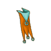
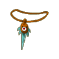
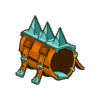
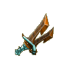

Menu barbok'you

| Niveau 185 | Cape Erforée | ||
|---|---|---|---|
|  | Recettes : | Caractéristiques : | Conditions : |
| 100 plumes de fesses du kido 11 tresses du poolay 3 Perruque du kimbo 2 Peau de bworker 1 Peau de moon 1 Etoffe magique de moon 1 Cape du chef bwork 1 Plume vibrante du tofu royale |
+201 à 250 vitalité +41 à 60 force +41 à 60 agilité +31 à 40 sagesse +6 à 10% dommage +4 à 6 dommages +1 portée +21 à 30% dom. pieges +21 à 30 prospection 6 à 10% resistance eau |
||
| Remarques : | |||
| Niveau 184 | Amulette Ripage | ||
|---|---|---|---|
| Recettes : | Caractéristiques : | Conditions : | |
|  | 2 Peau du rasboul majeur 21 Ecorce de nerbe 25 Croupion du bitouf aérien 15 Ecusson du sergent zoth 32 Bec du kido 3 Ambre du tynril 2 Peau de bworker 1 Amulette du chef bwork |
+1PA +31 à 50 force +31 à 50 agilité +31 à 40 sagesse +201 à 250 vitalité +1 à 2 CC +6 à 10 dommages +11 à 20% dommages aux pièges +301 à 400 initiative +11 à 20 prospection +6 à 10 résistance feu |
aucune |
| Remarques : | |||
| Niveau 179 | Bracelet Ventré | ||
|---|---|---|---|
| Recettes : | Caractéristiques : | Conditions : | |
|  | 15 Peau de Bworkette 1 Peau de Skeunk 50 Crinière de trool 10 Tresse du poolay 15 Ecorce de brouture 2 Peau de Bworker 3 Peau du rasboul majeur 1 Bracelet du chef bwork |
+26 à 40 force +26 à 40 agilité +151 à 200 vitalité +21 à 30 sagesse +2 à 3 CC +6 à 10 dommages +301 à 400 initiative +11 à 20 prospection +6 à 10 résistance feu +6 à 10% résistance feu |
|
| Remarques : | |||
| Niveau 182 | Lame Assacre | |||
|---|---|---|---|---|
| Recettes : | Effets : | Caractéristiques : | Conditions : | |
|  | 150 Fragment de cerveau poli 22 Bâton de kilibriss 11 Tâlon d'achille de l'abrakleur sombre 2 Ambre de tynril 2 Fragment d'épée reptilien 1 Peau de Bworker 1 Bwak squelettique 1 Lame du chef Bwork |
Dom : 8 à 17 (neutre) Dom : 6 à 10 (eau) Dom : 6 à 10 (feu) +251 à 300 vitalité +31 à 50 force +31 à 50 agilité +2 à 3 CC +4 à 6 dommages +6 à 10 résistance air 6 à 10% résistance air |
PA : 4 Portée : 1 à 1 Bonus CC : +7 Critique : 1/30 Echec : 1/40 |
force > 200 int > 150 chance > 150 agilité > 150 |
| Remarques : | ||||
| 1 Items | Aucun bonus |
|---|---|
| 2 Items | +15 Intelligence / +15 Chance |
| 3 Items | +30 Intelligence / +30 Chance / +2 CC |
| 4 Items | +1 PM / +50 Intelligence / +50 Chance / +4 CC |
Dofus est un MMORPG édité par Ankama." Barbok " est un site non-officiel sans aucun lien avec Ankama.
Toutes les illustrations sont la propriété d'Ankama Studio et de Dofus. Le contenu de ce site a été rédigé initialement par Immortal, il ne s'agit que d'une remise en ligne effectuée par Eternal Games.